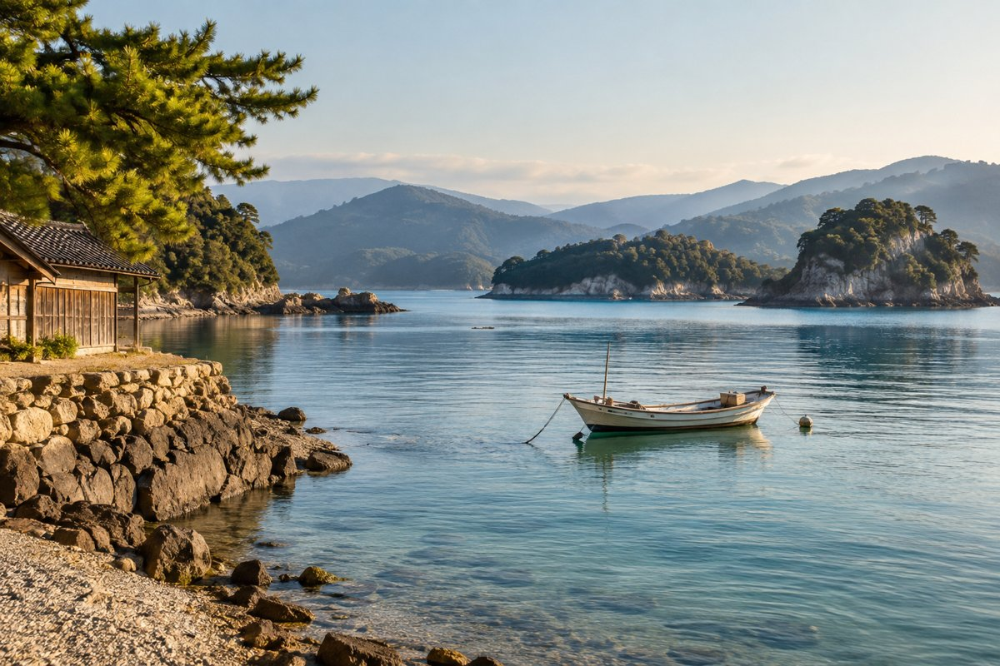
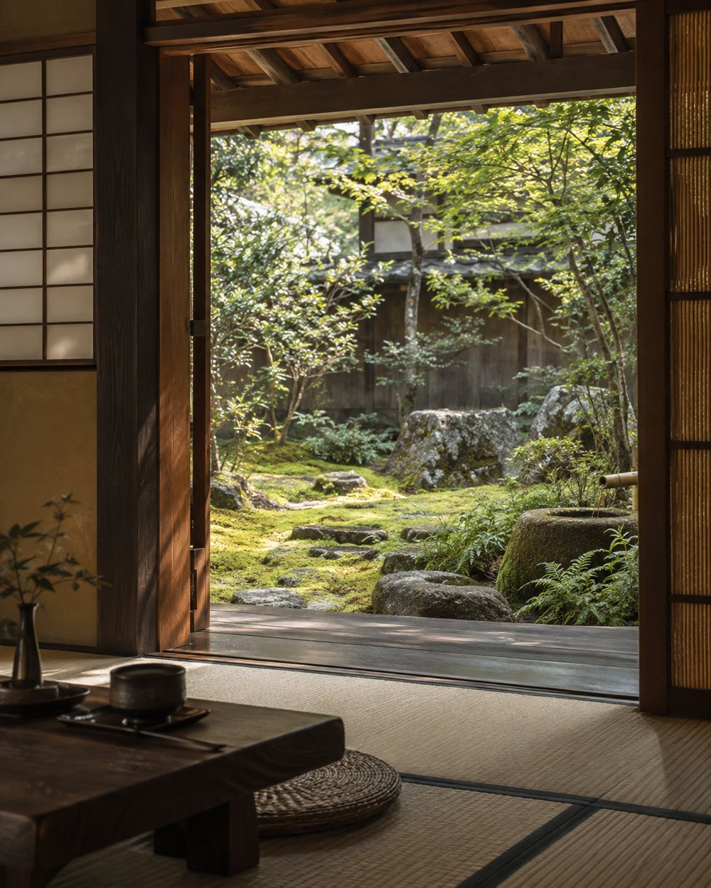

PLANNING / SAMPLE ARTICLE
A good itinerary leaves room.
Begin with what matters to you: nature, culture, food or time to unwind. A personal wish list can be more useful than a long list of sights.
Start your journey ↗Thoughts for your journey. Two sample articles for the future travel journal.

PLANNING / SAMPLE ARTICLE
Begin with what matters to you: nature, culture, food or time to unwind. A personal wish list can be more useful than a long list of sights.
Start your journey ↗
CULTURE & EVERYDAY LIFE / SAMPLE ARTICLE
A garden, a market visit or a pause by the water can give a journey its own rhythm. Choose a few places where you would like to linger.
Start your journey ↗